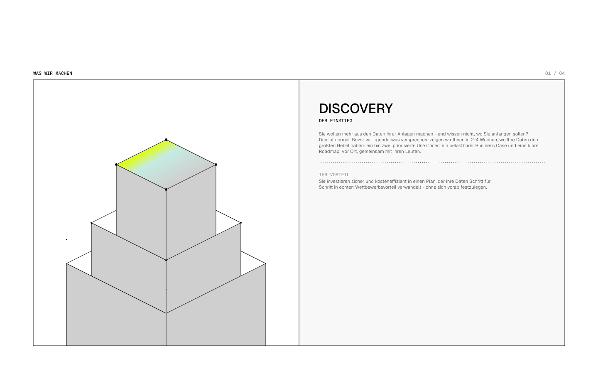
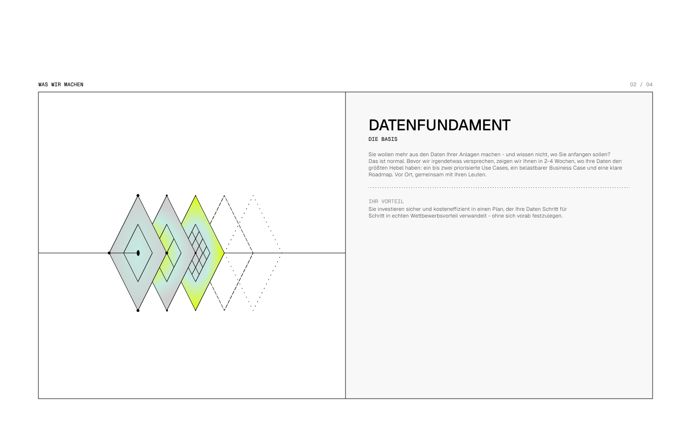
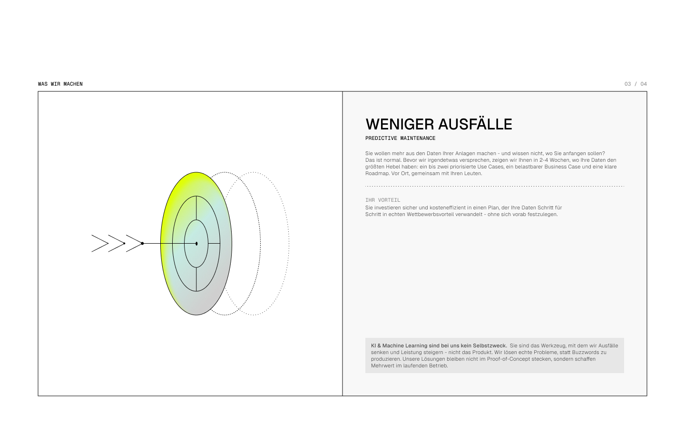
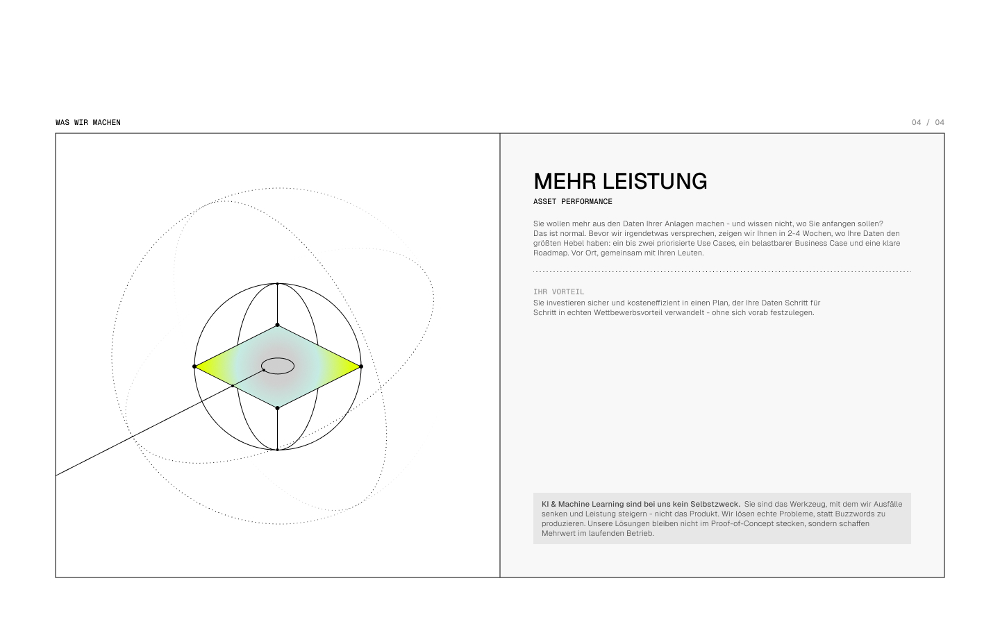

The sequence
Four cards, four objects, one story from first contact to running operations.
| # | Title | Subtitle | Object |
|---|
| 01 | Discovery | Der Einstieg | a telescoping shaft stepping down out of frame — ground being broken |
| 02 | Datenfundament | Die Basis | overlapping 63.43° plates, each subdivided finer than the last |
| 03 | Weniger Ausfälle | Predictive Maintenance | a rotor read on its axis, with the signal arriving from the left |
| 04 | Mehr Leistung | Asset Performance | a sphere cut by its equatorial plane, three orbits around it |
The objects get more concrete from front to back: card 01 is an excavation with
nothing in it yet, card 04 a system in motion. Only one element per object carries
the lime gradient, and it is always the one the eye should land on.
Figma reference
The original exports, for checking proportions and how the objects are constructed:




The four objects are now built from the designer's source vectors
(
assets/source/illustrations/), not approximated. Geometry, gradient
stops and construction points are the exported ones; three things were changed on
purpose, each because the export broke a rule the system does hold:
- Lime is
#E1FF00, not the export's #E0FF02.
- Dash patterns 8-2, 2-8 and 2-2 were mapped onto the four sanctioned line
types (2-1, 1-4, 1-2). See Geometry.
- Card 02 carried lime in two of its three plates. The dominant one — the
right-hand rim — keeps it; the middle core drops to Glas, so each object has
exactly one lime moment.
Card 04's tangent was also trued from 26.96° to exactly 26.57°, and Figma's inner-shadow
bevel on card 03 was dropped: it is not one of the six material layers.
That is now a checked claim rather than a stated one.
scripts/check-illustration-source.py matches every geometry element of
every shipped process object — 326 of them, across the four cards, the English
edition and the prototype — against its source vector, tag, coordinates and
transform, at the two decimals the exports are written to. The four
deviations above are the only ones it allows, and three of the four are re-derived
rather than listed: a dropped transform has to be provably a no-op, the
split traces have to partition the source path exactly, and the trued angle has to be
exactly 2:1 where the source was not. Colour is not its business —
check-gradient-family.py owns the waypoint and
check-paint-register.py the literals.
A rotation that looks redundant and is not
Card 04's three orbits are dashed 1-4 ellipses stroked with a gradient, not a
flat black — each one is solid along part of its length and fades to nothing along the
rest, which is what stops three full rings reading as a wire ball. All three carry a
rotation in the source vector. Two of them are 2:1 ellipses, where the rotation is
obviously load-bearing. The third is a true circle, and its
rotate(-90 403 513) had been dropped as a no-op.
It is not a no-op. The gradient is gradientUnits="userSpaceOnUse", and a
paint server is resolved in the user space in force where it is referenced —
which includes the element's own transform. Rotating the element rotates
its paint with it. The geometry of a circle is unchanged by a spin about its own centre;
the direction its stroke fades is not.
Measured on the landing page itself, at the shipped 352 px render: darkest stroke ink
found on a short arc at each cardinal point of the ring, 0 = nothing there, 255 = solid
black. The arc is scanned rather than a single pixel sampled because the ring is dashed
1-4, so most exact points fall in a gap.
| left | top | bottom | right |
|---|
with rotate(-90), as the source draws it | 127 | 168 | 146 | 7 |
| rotation dropped, as it had shipped | 124 | 144 | 7 | 146 |
One quadrant is empty in each case, and it is a different quadrant: the fade axis was 90°
out. The designer's orbit is solid on the left and dissolves to the right, away from the
trace that arrives from the lower left. The shipped one dissolved downwards instead,
which spent its solid half across the top of the lime disc — the one place on the object
the eye is meant to land. Restored to the source verbatim, so a diff against
assets/source/illustrations/ now shows no drift on this object — and that
diff is run on every push rather than asserted here: dropping this
rotate(-90) again fails scripts/check-illustration-source.py,
while dropping the identical attribute from the eight flat-filled dots beside it still
passes. Same attribute, same shape, different consequence — as a rule the script
re-derives rather than a pair of names it was given.
The general rule: never drop a transform from an element that is
painted with a userSpaceOnUse gradient, however redundant it looks against
the geometry. The eight construction dots on the same object carry the identical
rotate(-90) and are flat-filled black — dropping it there was correct, and is
why the orbit's was dropped too. Same attribute, same shape, different consequence.
The same fact read forwards decided how these three rings are animated.
They now turn as the object assembles — they are the only geometry in the system drawn as
motion, and they used to be the only thing on the page that said “this is circulating” and
then held still. They do not turn by taking an animated rotation, because that
would drag the fade round with them and re-create, once per scroll, exactly the defect the
table above measures. They turn by travelling their dashes, which touches no paint server:
the ring does not swing, the things on it go round.
→ Motion > An orbit turns
And they are this object's plan, so they are the first thing on screen.
A built object draws its dashed geometry first and the solids arrive into it; card 04's
three orbits are the only dashed geometry it has, so for one release that window ran empty
and the rings faded up over a finished sphere — measured at 375 px, first orbit ink at
cover 20 % with the eleven forms already at mean opacity 0.444. They now open
with the plan at 2 % and turn until the construction points settle at 50, which is the
whole assembly rather than its second half. The settled ring is unchanged: same 60 px of
travel, same twelve dashes, same phase.
→ Motion > It turns while the object assembles
Card 03's arrow is five traces, not one path
The source vector draws the incoming signal as a single <path> with
five subpaths — a shaft, an arrowhead's two barbs and two speed chevrons trailing behind
it — and the shipped copy inherited that shape. It is the wrong shape for a line that
draws itself. A dash pattern restarts at every subpath while
pathLength normalises the path as a whole, so each of the five drew
its own first 1 − offset of the total, all at once, and the arrow was
finished as soon as the longest of them was: the shaft is 0.3265 of 344.61 units, so the
whole drawing was complete at stroke-dashoffset 0.6735 —
cover 26.8 % of a range running to 45 %. Two thirds of its scroll range
was spent on a picture that had stopped changing, and what the range it did use showed was
five strokes sprouting from five points rather than a signal arriving.
It is five traces now, on three leads — the far chevron, then the near one, then the
arrowhead and the shaft together — so the signal travels left to right into the disc, in
the direction the designer drew it flying. The settled drawing is unchanged to the
coordinate: same five strokes, same round caps, same places. One d is
written backwards from the source (M300 511.5H412.5 for
M412.5 511.5H300) because a stroke's direction is invisible at rest and is
the whole of the draw.
→ Motion > A trace is one stroke